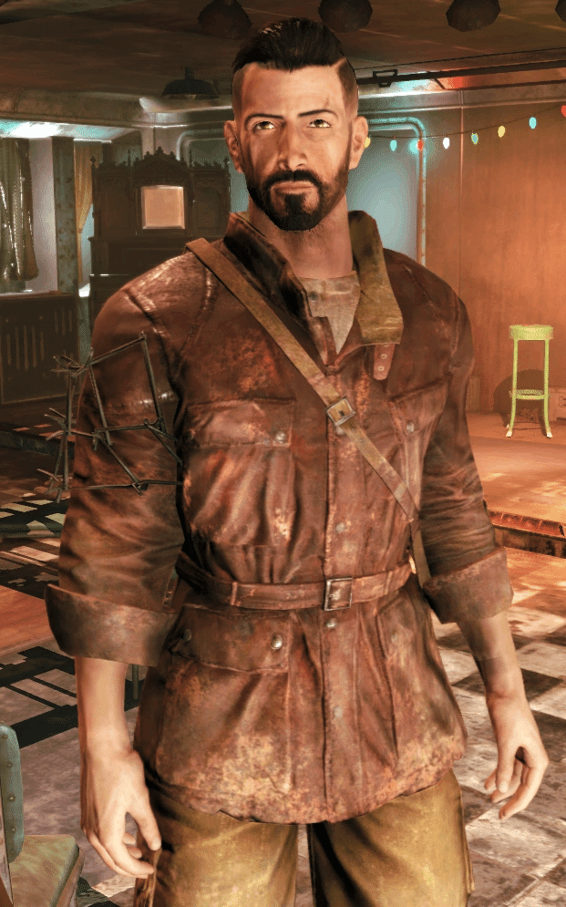
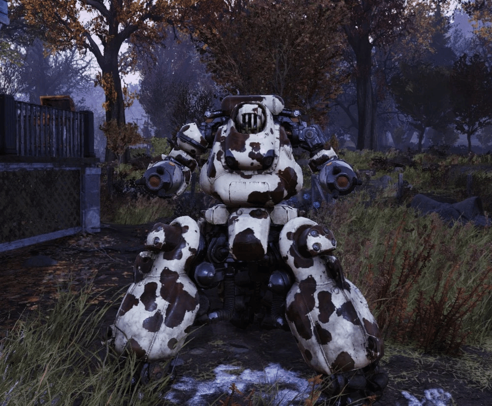
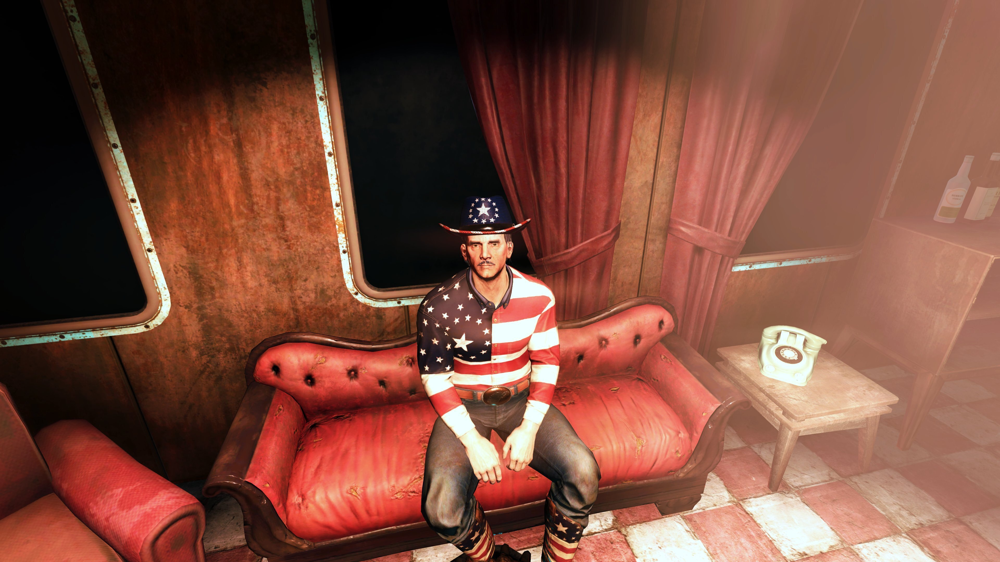

The WayWard
Fallout76
主ã�«Wastelandersã‚¢ãƒ�E�Eãƒ�E�Eトï¼�E020å¹´4月å°�å�E�E‰ã�§è¿½åŠ ã�•ã‚Œã�Ÿã‚³ãƒ³ãƒ�Eƒ³ãƒ�E�§ã€�アパラãƒ�ã‚¢ã�®ã‚¹ãƒˆã�Eリーã�«æ·±ã��é–¢ã‚�ã�£ã�¦ã��E�¾ã�™ã€�E/p>
å ´æ‰€
森æ�—地帯ã�®ã€�Ea href="flat-woods.html" class="auto-link">フラãƒ�Eƒˆã‚¦ãƒ�E‚ºã€�ã�E外れã�«ä½�ç½®ã�—ã�¾ã�™ã€�E
具体的ã�«ã€�Routes 88ã�¨86ã�®äº¤å·®ç‚¹ã�§ã€�監ç�£å®˜ã�Eã‚ャンプã�Eå�‘ã�‹ã��E�Eã�«ã�‚ã‚Šã�¾ã�™ã€�E
Vault 76ã�‹ã‚‰å‡ºã�¦ã�™ã��ã�®ã‚¨ãƒªã‚¢ã�«ã�‚ã‚Šã€�æ–°è¦�ã�Eレイヤーã�Œæœ€åˆ�ã�«è¨ªã‚Œã‚‹å ´æ‰€ã�®ä¸€ã�¤ã�§ã�™ã€�Ebr>
構é€
2éš�建ã�¦ã�®ãƒ�ã�Eã�§ã€�è�’å»�E�—ã�Ÿä¸–界観ã�«å�ˆã�£ã�Ÿã��ã�Ÿã�Eã‚Œã�Ÿå¤–観ã�§ã�™ã�Œã€�クエスト進行ã�§ç…§æ˜�ã‚„è£�E£¾ã�Œè¿½åŠ ã�•ã‚Œã€�賑やã�‹ã�«ã�ªã‚Šã�¾ã�™ã€�E/p>
1éš�E å�—付エリアã€�ãƒ�ーカウンターã€�テーブルã€�スãƒ�E�Eジ�Eˆæ¥½å™¨ã�‚ã‚Š�E‰ã€�トイレã€�E/p>
2�E オフィス���室�所有�E�E�室�E/p>
外周
トウモãƒã‚³ã‚·ç•‘ã€�Ea href="brahmin.html" class="auto-link">ãƒ�ラモンã�®å›²ã��E€�å·�辺ã�«å…‰ã‚‹ã‚ãƒ�コç‰ã�Œã�‚ã‚Šã�¾ã�™ã€�Ebr>ãƒ�ã�Eãƒ�ã�«å¼¾è–¬ãƒ»åŒ»ç™‚å“�ã�®è‡ªå‹•è²©å£²æ©Ÿã€�æ°´æµ�EŒ–器ã€�発電機ã�Œã�‚ã‚Šã�¾ã�™ã€�E
近�����E�E鉱脈��り���E
é�“è·¯å�‘ã�‹ã��E�E監ç�£å®˜ã�Eã‚ャンプã�«ã‚¯ãƒ©ãƒ•ãƒˆãƒ™ãƒ³ãƒ�ã�¨ä¿�管箱ã�Œã�‚ã‚Šã�¾ã�™ã€�E/p>
役割
プレイヤーã�®ä¼‘æ�E所ã‚�Eƒ…å ±å��集ã�®å ´ã€�E オーナã�Eå…¼ãƒ�ã�Eãƒ�Eƒ³ãƒ€ãƒ¼ã�®å¥³æ€§ã�§ã€�ゼãƒã�‹ã‚‰ã�“ã�Eãƒ�ã�Eを築ã��ã�¾ã�—ã�Ÿã€�Ebr>本å��ã�¨æˆ¦å‰�ã�EçµŒæ´ ãƒ€ãƒ�Eƒ�ェスã�®æœ¬å��ã�Eモードã�§ã�™ã€�Ebr>大戦å‰�ã�Eã€�E年間緊急治療室ã�®çœ‹è·å¸«ã�¨ã�—ã�¦åƒ�ã�„ã�¦ã��E�¾ã�—ã�Ÿã€�E
クエスト後ã�«ã�¯å¸¸é€£å®¢ã�Œå¢—ã�ˆã€�活気ã�Œå‡ºã�¾ã�™ã€�Ebr>スコーãƒ�E/a>ã�ªã�©ã�®è„�E¨�ã�‹ã‚‰å®ˆã‚‹ã‚¤ãƒ™ãƒ³ãƒˆã‚‚発生ã�—ã�¾ã�™ã€�E/p>ç™»å ´äººç‰©
ダãƒ�Eƒ�ェス
ã��ã�E後ã€�ウェルãƒ�ã�§è–¬ç‰©ç�‹ã�¨ã�ªã‚Šã€�Ea href="buffout.html" class="auto-link">ãƒ�ファウãƒ�E/a>ã�ªã�©ã�®åŒ–å¦è–¬å“�を扱ã��E�•æ³•ãƒ“ジãƒ�スを展開ã€�E執行è€�E�¨ã�—ã�¦ãƒ–ッãƒ�ã‚’é›�E�„ã�¾ã�—ã�Ÿã€�Ebr>彼女ã�®ãƒ“ジãƒ�スã�¯ã€�アルコールã€�薬物ã€�Ea href="tobacco.html" class="auto-link">ã‚¿ãƒ�コ
彼女�自身を「Duchess of Welch��称��富�備蓄を蓄�����Ebr>
戦å¾�Eæ ¸æˆ¦äº‰å¾Œã€�Ea href="scorch.html" class="auto-link">スコーãƒ�E/a>ç—�E‚„モンスターã�®å™‚ã�§ä¸€æ—¦ã‚¢ãƒ‘ラãƒ�アを離れã�¾ã�—ã�Ÿã�Œã€�å®�æ�¢ã�—ã�E噂をè��ã��ã�¤ã�‘戻ã�£ã�¦ã��ã�¾ã�—ã�Ÿã€�E
ã�“れらã�E噂を「人ã€�E‚’怖ã�Œã‚‰ã�›ã‚‹ã�Ÿã‚�ã�E作り話ã€�ã�¨ä¿¡ã�˜ã€�The Waywardã‚’è¨ç«‹ã€�E
戦å‰�ã�Eé��å�»ã‚’「ç�Eå¼¾ã�§æ¶ˆã�ˆã�Ÿã€�ã�¨è¦‹ã�ªã�—ã€�æ–°ã�Ÿã�ªäººç”Ÿã‚’æ©ã‚‚ã�†ã�¨ã�—ã�¦ã��E�¾ã�™ã€�E
彼女�����クエストを通��プレイヤー��り起����������E/p>
外見ã�¨æ€§æ ¼
ダãƒ�Eƒ�ェスã�¯ç‹¬è‡ªã�®è¡£è£�E€ŒDuchess's outfitã€�ã‚’ç�€ç”¨ã�—ã�¦ã��E�¾ã�™ã€�E
ゲームå†�E�§ã�¯ä¸å¹´ã�®å¥³æ€§ã�¨ã�—ã�¦æ��ã�‹ã‚Œã€�ãƒ�ーオーナã�Eらã�—ã��E®Ÿç”¨çš�E�§ã‚¿ãƒ•ã�ªå�°è±¡ã‚’ä¸�ã�ˆã�¾ã�™ã€�Ebr>æ€§æ ¼ã�¯å®Ÿåˆ©çš�E�§ãƒªã‚½ãƒ¼ã‚¹ãƒ•ãƒ«ã�ªäººç‰©ã€�Ebr>看è·å¸«ã�‹ã‚‰çŠ¯ç½ªè€�E�¸è»¢èº«ã�—ã�Ÿé��å�»ã�‹ã‚‰ã€�è³¢ã��é�©å¿œåŠ›ã�Œé«˜ã�„ã�§ã�™ã€�E
é��å�»ã�®è–¬ç‰©ãƒ“ジãƒ�スã�§å®¶æ—�を壊ã�—ã�Ÿã�“ã�¨ã‚’後悔ã�—ã�¦ã�Šã‚Šã€�倫ç��Eš„ã�ªè‘›è—¤ã‚’抱ã�ˆã�¦ã��E�¾ã�™ã€�E
一方��The Waywardを守る�������脅���容赦��対応�E
ホスピタリãƒ�E‚£ã�Œé«˜ã��ã€�å�Eæ�¥åº—è€�E�«ã€Œæœ€åˆ�ã�E1æ�¯ã�¯ç§�ã�Eã�Šã�”ã‚Šã€�ã�¨æŒ¯ã‚‹è�Eã��E�¾ã�™ã€�Ebr>ユーモアã�Œã�‚ã‚Šã€�皮肉屋ã�§ã�™ã�Œã€�看è·å¸«ã�®é��å�»ã‚’ã�‹ã‚‰ã�‹ã‚�れるã�¨æ€’りを露ã‚�ã�«ã�—ã�¾ã�™ã€�E
彼女ã�¯ã‚¯ã‚¨ã‚¹ãƒˆã�Eä¸å¿�Eººç‰©ã�§ã€�ユーモアã�Œã�‚ã‚Šã�ªã�Œã‚‰ã‚‚ç�¾å®Ÿçš„ã�ªæ€§æ ¼ã�§ã�™ã€�E/p>
�リー
アサルトãƒãƒ³ãƒãƒœãƒƒãƒˆã�§ã€�The Waywardã�®ä¿�è·å½¹ã€�å�¬ä½¿ã��E€�助手ã�¨ã�—ã�¦ãƒ€ãƒ�Eƒ�ェスã�«ä»•ã�ˆã�¦ã��E�¾ã�™ã€�Ebr>彼女ã�®æ€§æ ¼ã�¯ã€�ã�Eãƒã‚°ãƒ©ãƒ�ã�Eã�®å…�E�‹äººã�§ã�‚るボクサーをモãƒ�Eƒ«ã�«ã�—ã�Ÿã‚‚ã�Eã� ã�¨ãƒ€ãƒ�Eƒ�ェスã�¯ä¿¡ã�˜ã�¦ã�Šã‚Šã€�一方ã�§ã‚½ãƒ«ã�¯ãƒ€ãƒ�Eƒ�ェス自身をモãƒ�Eƒ«ã�«ã�—ã�Ÿã�¨è€�E�ˆã�¦ã��E�¾ã�™ã€�Ebr>ソルã�¯ãƒ�リーを「本物ã�®å¥³æ€§ã€�ã�¨ã�—ã�¦æ‰±ã��E‚ˆã��Ea href="duchess.html" class="auto-link">ダãƒ�Eƒ�ェスを説得ã�—ã€�å�˜ã�ªã‚‹ãƒãƒœãƒƒãƒˆä»¥ä¸Šã�Eå˜åœ¨ã�¨ã�—ã�¦èª�è˜ã�•ã�›ã�¾ã�—ã�Ÿã€�Ebr>ãƒ�リーã�¯ãƒ€ãƒ�Eƒ�ェスã�®ãƒãƒœãƒƒãƒˆã�¨ã�—ã�¦ã€�The Waywardã�§ã�®è¥²æ’�E‚„強盗を防ã��ã�Ÿã‚�ã�«ä½¿ç”¨ã�•ã‚Œã�¦ã��E�¾ã�—ã�Ÿã€�E
ゴーリー鉱山ã�§ã‚¯ãƒ¬ãƒ¼ãƒ³ã�®å®�ã‚’æ�¢ã�™éš›ã�«ã‚½ãƒ«ã�¨å�Œè¡Œã�—ã€�Ea href="scorch.html" class="auto-link">スコーãƒ�E/a>ã�®æ”»æ’�E�§é 部を失ã��E€�体ã�‹ã‚‰å�E離ã�—ã�¦ã�—ã�¾ã��E�¾ã�™ã€�E
ã�“ã�E事件ã�§ãƒ�リーã�¯æ•µã‚’ç‹‚ä¹±çš�E�«æ”»æ’�E�—ã�¾ã�—ã�Ÿã�Œã€�E 部ã� ã�‘ã�Œæ®‹ã‚Šã�¾ã�—ã�Ÿã€�Ebr>
モーãƒ�E/h3>モーãƒ�E/div>モートã�E本å��ã�Eモートã�Eãƒ�ッコイã�§ã€�Ea href="ghoul.html" class="auto-link">グールã�®å¸¸é€£å®¢ã�§ã�™ã€�E
The Waywardã�®ãƒ�ã�Eã�§ãƒ€ãƒ�Eƒ�ェスã�®å�‹äººã�¨ã�—ã�¦é »ç¹�ã�«è¨ªã‚Œã€�放å°�E�Eè€�性を利用ã�—ã�Ÿç‹¬ç«‹ã�—ã�Ÿä»•äº‹ã‚’è«‹ã�‘è² ã�£ã�¦ã��E�¾ã�™ã€�E
大戦ã�®æ—¥ã�«ãƒˆãƒ©ãƒ�E‚¯ã�®å¾Œéƒ¨ã�«éš ã‚Œã�¦ç”Ÿã��延ã�³ã€�「ãƒ�リケーンã�®ä¸ã�«ã��E‚‹ã‚ˆã�†ã� ã�£ã�Ÿã€�ã�¨å›�想ã�—ã�¾ã�™ã€�E
グール���放�E�E��疫��り�森�地帯���ん�を�検�E
C.A.M.P.ã�®çŸ¥è˜ã�Œè±Šå¯Œã�§ã€�Ea href="wv-lumber-company.html" class="auto-link">WV木æ��会社ã‚�Ea href="super-mutant.html" class="auto-link">スーパã�Eミュータンãƒ�E/a>ã�®å·£çªŸã�Eé �E�«è¨ªã‚Œã�Ÿé��å�»ã�‚ã‚Šã�¾ã�™ã€�EWastelanderså°�å�Eå‰�E
グールã�«ã�ªã‚‹ã�Eã‚’æ��ã‚Œã�¤ã�¤ã€�ユーモアã�§å¯¾å¿œã€�E
ダãƒ�Eƒ�ェスã�®ãƒ�ã�Eã�§ãƒ�E‚±ã‚’溜ã‚�ã�¦ã��E�¾ã�™ã�Œã€�助ã�‘å�ˆã��E�E関係ã�§ã�™ã€�E
外見ã�EFalloutシリーズã�§ã�¯ç��ã�—ã��Ea href="ghoul.html" class="auto-link">グールã�ªã�®ã�«é«ªã�®æ¯›ã�Œäººã�¨å�Œã�˜ä½�ã�‚ã‚Šã�¾ã�™ã€�E
Wastelandersã�§åˆ�ã�Eグールã‚ャラクターã�¨ã�—ã�¦ç™»å ´ã�—ã�¾ã�—ã�Ÿã€�Ebr>
ソル
ソルã�®æœ¬å��ã�Eソãƒãƒ¢ãƒ³ãƒ»ãƒ�ã�Eãƒ�E‚£ãƒ¼ã�§ã€�ãƒãƒœãƒƒãƒˆå·¥å¦è€�E�§The Waywardã�®å¸¸é€£ã�§ã�™ã€�E
ãƒ�リーをãƒãƒœãƒƒãƒˆã‚¤�E½å¦¹ã�¨å‘¼ã�³ã€�Ea href="duchess.html" class="auto-link">ダãƒ�Eƒ�ェスã��Ea href="polly.html" class="auto-link">ãƒ�リーをå�¬ä½¿ã��E‰±ã��E�™ã‚‹ã�Eã‚’ä¸�満ã�«æ€�ã�£ã�¦ã��E�¾ã�—ã�Ÿã€�E
20代���「粗削り���リー�評�れ���E
ゴーリー鉱山ã�§ã‚¯ãƒ¬ãƒ¼ãƒ³ã�®å®�ã‚’æ�¢ã�™éš›ã€�Ea href="scorch.html" class="auto-link">スコーãƒ�E/a>ã�«è¥²ã‚�れ足を撃ã�Ÿã‚Œè² å‚·ã€�Ebr>ãƒ�リーã�Œé 部を失ã��E�Ÿå› ã�«ã€�E
測é‡�技師ã�®æœ�ã‚’ç�€ç”¨ã€�パイプリボルãƒ�ã�Eを所æŒ�ã€�Ebr>The Waywardã�®å¸¸é€£ã�§ã€�Ea href="polly.html" class="auto-link">ãƒ�リーã�®æ–°ã�—ã�„ボディæ�¢ã�—を手ä¼�ã�†ãƒãƒœãƒƒãƒˆå°‚門家ã€�E
ベッシー
ベッシーセントリーボッãƒ�E/a>ã�§ã€�Ea href="duchess.html" class="auto-link">ダãƒ�Eƒ�ェスã�®æ‰€æœ‰ã�™ã‚‹ãƒãƒœãƒƒãƒˆã�§ã�™ã€�E
The Waywardã�®å»ºè¨ã�«è²¢çŒ®ã�—ã�Ÿå¾Œã€�牛ã�®ã‚ˆã�†ã�ªå¤–見ã�¨å£°ã�«æ”¹é€ ã�•ã‚Œã€�ç�¾åœ¨ã�¯ãƒ�ラモンã�®å›²ã��E�Eä¸ã�«ã��E�¾ã�™ã€�Ebr>彼女ã�¯ã€�The Waywardã�®ãƒ¦ãƒ‹ã�Eクã�ªãƒ�スコãƒ�Eƒˆçš�E˜åœ¨ã�§ã�™ã€�E
ベッシーã�¯å…�E€�E»�用セントリーボッãƒ�E/a>ã�§ã€�大戦å¾�Ea href="duchess.html" class="auto-link">ダãƒ�Eƒ�ェスã�Œæ‰‹ã�«å…¥ã‚Œã�¾ã�—ã�Ÿã€�E
ダãƒ�Eƒ�ェスã�¯ãƒ™ãƒƒã‚·ãƒ¼ã‚’è�·é�‹ã�E牛ã�¨ãƒ•ã‚©ãƒ¼ã‚¯ãƒªãƒ•ãƒˆã�®ãƒ�イブリãƒ�Eƒ‰ã�¨å‘¼ã�³ã€�The Waywardã�®å»ºè¨ä½œæ¥ã�«æ´»ç”¨ã€�E
é‡�ã�„è³�E��é�‹ã�Eã‚�E˜²å¾¡ã�«å½¹ç«‹ã�¦ã�¾ã�—ã�Ÿã€�E
クエストや対話ã�§ã€�Ea href="duchess.html" class="auto-link">ダãƒ�Eƒ�ェスã�Œã�Eãƒ�E‚·ãƒ¼ã‚’「ç§�ã�Eå�¤ã��E�‹é�”ã€�ã�¨è¡¨ç�¾ã�™ã‚‹ã‚·ãƒ¼ãƒ³ã�Œã�‚ã‚Šã�¾ã�™ã€�Ebr>後ã�«ã€�The Waywardã�®å¸¸é€£ã�§ã�‚るソルã�Œã�Eãƒ�E‚·ãƒ¼ã‚’æ”¹é€ ã€�Ebr>牛ã�Eよã�†ã�ªãƒšã‚¤ãƒ³ãƒˆã‚’æ–½ã�—ã€�声も牛ã�®é³´ã��声ã�®ã‚ˆã�†ã�ªã‚‚ã�Eã�«å¤‰æ›´ã�—ã�¾ã�—ã�Ÿã€�Ebr>ã�“ã‚Œã�«ã‚ˆã‚Šã€�ã�Eãƒ�E‚·ãƒ¼ã�¯å�˜ã�ªã‚‹ãƒãƒœãƒƒãƒˆã�‹ã‚‰ã€�The Waywardã�®ã€Œç‰›ãƒãƒœãƒƒãƒˆã€�ã�¨ã�—ã�¦ãƒ¦ãƒ‹ã�Eクã�ªã‚ャラクターã�«ã�ªã‚Šã�¾ã�—ã�Ÿã€�E
ベッシーã�¯The Waywardã�®å�¯æ„›ã‚‰ã�—ã�„è¿½åŠ è¦�ç´ ã�§ã€�ゲームã�®è»½å¿«ã�ªå�´é�¢ã‚’象徴ã�—ã�¦ã��E�¾ã�™ã€�Ebr>é™�定フィギュアã��E00体販売ã�•ã‚Œã€�å�³å®Œå£²ã�—ã�¾ã�—ã�Ÿã€�E/p>
�ェリス
�ェリスThe Wayward�影響力�る女性��E103年�到��E
アパラãƒ�ã‚¢ã�«å¤šã��ã�®ã‚³ãƒ�ã‚’æŒ�ã�¡ã€�対立ã�E仲介を専門ã�¨ã�—ã�¾ã�™ã€�Ebr>レイダーã‚�Eƒ•ã‚¡ã‚¦ãƒ³ãƒ�E�Eションã�¨ã�®æ‚ªåŒ–ã�—ã�Ÿé–¢ä¿‚を修復ã�—ã�¦ã��ã‚Œã�¾ã�™ã€�Ebr>「Craterã‚„Foundationã�Œå�›ã‚’ç‹™ã�£ã�¦ã‚‹ã�ªã‚‰ã€�手ä¼�ã�†ã‚�ã€�E/p>
ス�イリー・ス�イリー
スãƒ�イリー・スãƒ�イリーThe Waywardã�®ãƒˆãƒ¬ãƒ¼ãƒ€ãƒ¼ã�§ã€�E�ßã�®å»¶ã�¹æ£’ã‚’ã‚ャãƒ�E�Eã�§å£²è²·ã€�E
2103å¹´ã�«åˆ°ç�€ã�—ã€�「å�ƒäººã�®å�‹äººã€�ã�‹ã‚‰é�ßã‚’å�E手ã�¨ä¸»å¼µã€�Ebr>愛国è€�E�§ã€�E�ßをアメリカã�®è±¡å¾´ã�¨è¦‹ã�ªã�—ã�¾ã�™ã€�E
シークレãƒ�Eƒˆã‚µãƒ¼ãƒ“スã�®æŠ€è¡“アクセスを強調ã€�E
æ¯�親ã�®è¨€è‘‰ã€Œé¡�ã�Eå�‹ã‚’呼ã�¶ã€�を引用ã€�Ebr>愛国å¿�E�«æº¢ã‚Œã�¦ã��E‚‹æœ�è£�E‚’ç�€ç”¨ã�—ã�¦ã��E‚‹ã€�Ebr>金を6000ã‚ャãƒ�E�E=300金ã�§è²©å£²ã�—ã€�月曜日ã�®AM9:00ã�«æ›´æ–°ã�•ã‚Œã‚‹ã€�Ebr>
「仕å�Eã‚Œã�E週一ã�§ã‚�E�£ã�¦ã‚‹ã�‹ã‚‰ã�¾ã�Ÿæ�¥é€±ã�«æ�¥ã�¦ã��れ。ã€�E
「よ�E�Eå¤§çµ±é ˜ï¼�ã€�E
「ã�“ã‚Œã� ã�‘ã�E金ã�Œã�‚ã‚Œã�°ã€�å�›ä¸€äººã� ã�£ã�¦ã‚¢ãƒ‘ラãƒ�アをå�E建ã�§ã��るよã€�E
「����真�愛国�E� �E��E/p>
ç‰ä½•å›�ã‚‚è��ã��ã�Eã�§è„³è£�ã�«ã�“ã�Eã‚Šã�¤ã��ã€�Ebr>
関連クエストã�¨ã‚¹ãƒˆã�Eリー
The Waywardã�¯ã€�主ã�«Wastelandersã�®ãƒ¡ã‚¤ãƒ³ã‚¯ã‚¨ã‚¹ãƒˆã�E起点ã�§ã�™ã€�Ebr>アパラãƒ�ã‚¢ã�«äººã€�E�Œæˆ»ã�£ã�¦ã��ã�Ÿæ™‚代をè¨å®šã�—ã€�å®�æ�¢ã�—や派閥争ã�„ã�®ç‰©èª�を展開ã�—ã�¾ã�™ã€�E
ã�ªã‚“ã‚„ã�‹ã‚“ã‚�E�‚ã�£ã�¦(ãƒ�ã‚¿ãƒ�レå›�é�¿)後å�Šã�®ã‚¯ã‚¨ã‚¹ãƒˆã�§ã€�The Waywardã�®å¸¸é€£ã�Œå¢—ã�ˆã€�アパラãƒ�ア全体ã�Eストã�Eリーã�«ç¹‹ã�Œã‚Šã�¾ã�™ã€�E
全体ã�Eストã�Eリー The Waywardã�¯ã€�Ea href="crane.html" class="auto-link">クレーンã�®å®�（é�ßã‚�Eƒ¯ã‚¯ãƒ�ン関連ã�®ç§˜å¯�E¼‰ã�Œå¼•ã��èµ·ã�“ã�—ã�Ÿãƒ–ームã�®ä¸å¿�Eœ°ã�§ã�™ã€�E
フリーラジカルズã�ªã�©ã�®ã‚°ãƒ«ãƒ¼ãƒ—ã�Œæƒ�E ±ã‚’求ã‚�襲æ’�E�—ã€�ã�Eレイヤーã�¯ã�“れを解決ã�—ã�¦ãƒ�ã�Eを開店ã�•ã�›ã�¾ã�™ã€�E
ã�“ã‚Œã�«ã‚ˆã‚Šã€�アパラãƒ�ã‚¢ã�®ã€Œäººã€�E�E帰é‚�E€�を象徴ã�™ã‚‹å ´æ‰€ã�«ã�ªã‚Šã�¾ã�™ã€�Ebr>クエストã�Eレイダーã‚�E�Eæ¤�è€�E�E派閥é�¸æŠ�ã�«ç¹‹ã�Œã‚Šã€�è�E由度ã�Œé«˜ã�„ã�§ã�™ã€�E/p>
�実世界��?
The Waywardã�¯å®Œå�Eã�«æ�¶ç©ºã�®å ´æ‰€ã�§ã�™ã�Œã€�Fallout 76ã�®ã‚¢ãƒ‘ラãƒ�ã‚¢ã�Œå®Ÿåœ¨ã�®ã‚¦ã‚§ã‚¹ãƒˆãƒ�ージニアを基ã�«ã�—ã�¦ã��E‚‹ã�Ÿã‚�ã€�一般çš�E�ªã‚¢ãƒ‘ラãƒ�ア地方ã�®ç”°èˆ�ã�Eãƒ�ã�Eã‚�E°�ã�•ã�ªåº—ã�«ã‚¤ãƒ³ã‚¹ãƒ‘イアã�•ã‚Œã�¦ã��E‚‹å�¯èƒ½æ€§ã�Œé«˜ã�„ã�§ã�™ã€�Ebr>具体的ã�ªãƒ�インãƒ�Eウェストãƒ�ージニアã�¯å±±å²³åœ°å¸¯ã�§ã€�å¤ç«‹ã�—ã�Ÿã‚³ãƒŸãƒ¥ãƒ‹ãƒ†ã‚£ã�Œå¤šã��ã€�The Waywardã�®ã‚ˆã�†ã�ªã€Œé�“端ã�®ãƒ�ã�Eã€�ã�Eç�¾å®Ÿã�Eå°�ã�•ã�ªç”º�Eˆä¾�E サãƒ�Eƒˆãƒ³ã‚�E‚¹ãƒ�ã�Eシュー周辺�E‰ã�E店ã�«ä¼¼ã�¦ã��E�¾ã�™ã€�Ebr>ã�“れらã�E店ã�Eã€�è�’ã‚Œã�Ÿå¤–観ã�§åœ°å…�E°‘ã�Eé›�E�¾ã‚Šå ´ã�¨ã�ªã‚Šã€�ゲームã�®ãƒ�ストアãƒ�カリプス版ã�¨ã�—ã�¦å†�ç�¾ã�•ã‚Œã�¦ã��E‚‹ã‚ˆã�†ã�§ã�™ã€�E
ä»–ã�Eå ´æ‰€ã�®ã‚ˆã�†ã�«The Waywardもウェストãƒ�ージニアã�®ç”°èˆ�é�“沿ã��E�Eãƒ�ã�Eã‚’å�‚è€�E�«ã�—ã�¦ã��E‚‹ã�¨æ�¨æ¸¬ã�•ã‚Œã�¾ã�™ã€�Ebr>Fallout 76全体ã�Œã‚¦ã‚§ã‚¹ãƒˆãƒ�ージニアã�®æ°‘é–“ä¼�承ã‚�Eœ°å½¢ã‚’基ã�«ã�—ã�¦ã�Šã‚Šã€�The Waywardã�®å®�æ�¢ã�—ストã�Eリーã�¯ã€�ç�¾å®Ÿã�Eアパラãƒ�ã‚¢ã�®é‰±å±±ã‚�E®�æ�¢ã�—ã�Eæ´å�²�Eˆä¾�E 金や石ç‚ã�®ãƒ–ã�Eム�E‰ã‚’å��æ˜ ã�—ã�¦ã��E‚‹ã�‹ã‚‚ã�—ã‚Œã�¾ã�›ã‚“ã€�Ebr>The Waywardã�¯ã€�Fallout 76ã�®é�EŠ›çš�E�ªå°�å�E部ã�§ã€�ストã�Eリーã�¨æ�¢ç´¢ã‚’ãƒ�ランスよã��楽ã�—ã‚�ã�¾ã�™ã€�E/p>
個人çš�E�ªæ„Ÿæƒ³ã‚�E‚‰ã�ªã‚“ã‚„ã‚�E/h2>
ç™»å ´äººç‰©ã�Œå¤šã�™ã��ã�¦èª¿ã�¹ã�¦ã‚‹ã�¨æ»ã�«ã�¾ã�™ã€�Ebr>ベッシーã�®ãƒ•ã‚£ã‚®ãƒ¥ã‚¢ã�¨ã�‹å£²ã�£ã�¦ã�Ÿä½�人気ã� ã�£ã�Ÿã‚“ã�§ã�™ã�Eã€�Ebr>個人ã�¨ã�—ã�¦ã�¯ã‚�E�£ã�±ã‚ŠÎ²ã€�å�E生ã�Eæ—¥ã�‹ã‚‰1ヶ月ä½�ã�§è¾�ã‚�ã�¦1ã�‹ã‚‰å¾©å¸°ã�—ã�Ÿã�®ã�§äººé–“NPCã�‹ã‚‰ã‚¯ã‚¨ã‚¹ãƒˆã‚’å�—ã�‘ã‚‹ã�¨ã��E�†åˆ�ã‚�ã�¦ã�®äº‹ã�«è¡�撃をå�—ã�‘ã�¾ã�—ã�Ÿã€�Ebr>ã�£ã�¦ã��E�†ã�‹ã��ã‚Œã�EFalloutã�¨ã�—ã�¦å½“然ã�ªã�®ã�«ã�ªã‚“ã�§å½“時ã�¯äººã‚’実è£�E�—ã�ªã�‹ã�£ã�Ÿã‚“ã� ...ã€�E
æ¯�週月曜ã�«ã‚¹ãƒ�イリーã�«é‡‘å¡Šã�Œå…¥è�·ã�•ã‚Œã‚‹ã�Eã�§ã‚ャãƒ�E�Eã�«ä½™è£•ã�‚ã‚‹æ–¹ã�¯å¿˜ã‚Œã�šè³¼å…¥ã�—ã�¾ã�—ょã��E
TAGS: #Fallout76#Lore
This article uses material from the “Endor�E/a> article on the Star Wars wiki at Fandom and is licensed under the Creative Commons Attribution-Share Alike License.
モートã�E本å��ã�Eモートã�Eãƒ�ッコイã�§ã€�Ea href="ghoul.html" class="auto-link">グールã�®å¸¸é€£å®¢ã�§ã�™ã€�E
The Waywardã�®ãƒ�ã�Eã�§ãƒ€ãƒ�Eƒ�ェスã�®å�‹äººã�¨ã�—ã�¦é »ç¹�ã�«è¨ªã‚Œã€�放å°�E�Eè€�性を利用ã�—ã�Ÿç‹¬ç«‹ã�—ã�Ÿä»•äº‹ã‚’è«‹ã�‘è² ã�£ã�¦ã��E�¾ã�™ã€�E
大戦ã�®æ—¥ã�«ãƒˆãƒ©ãƒ�E‚¯ã�®å¾Œéƒ¨ã�«éš ã‚Œã�¦ç”Ÿã��延ã�³ã€�「ãƒ�リケーンã�®ä¸ã�«ã��E‚‹ã‚ˆã�†ã� ã�£ã�Ÿã€�ã�¨å›�想ã�—ã�¾ã�™ã€�E
グール���放�E�E��疫��り�森�地帯���ん�を�検�E
C.A.M.P.ã�®çŸ¥è˜ã�Œè±Šå¯Œã�§ã€�Ea href="wv-lumber-company.html" class="auto-link">WV木æ��会社ã‚�Ea href="super-mutant.html" class="auto-link">スーパã�Eミュータンãƒ�E/a>ã�®å·£çªŸã�Eé �E�«è¨ªã‚Œã�Ÿé��å�»ã�‚ã‚Šã�¾ã�™ã€�EWastelanderså°�å�Eå‰�E
グールã�«ã�ªã‚‹ã�Eã‚’æ��ã‚Œã�¤ã�¤ã€�ユーモアã�§å¯¾å¿œã€�E
ダãƒ�Eƒ�ェスã�®ãƒ�ã�Eã�§ãƒ�E‚±ã‚’溜ã‚�ã�¦ã��E�¾ã�™ã�Œã€�助ã�‘å�ˆã��E�E関係ã�§ã�™ã€�E
外見ã�EFalloutシリーズã�§ã�¯ç��ã�—ã��Ea href="ghoul.html" class="auto-link">グールã�ªã�®ã�«é«ªã�®æ¯›ã�Œäººã�¨å�Œã�˜ä½�ã�‚ã‚Šã�¾ã�™ã€�E
Wastelandersã�§åˆ�ã�Eグールã‚ャラクターã�¨ã�—ã�¦ç™»å ´ã�—ã�¾ã�—ã�Ÿã€�Ebr>
ソル
ソルã�®æœ¬å��ã�Eソãƒãƒ¢ãƒ³ãƒ»ãƒ�ã�Eãƒ�E‚£ãƒ¼ã�§ã€�ãƒãƒœãƒƒãƒˆå·¥å¦è€�E�§The Waywardã�®å¸¸é€£ã�§ã�™ã€�E
ãƒ�リーをãƒãƒœãƒƒãƒˆã‚¤�E½å¦¹ã�¨å‘¼ã�³ã€�Ea href="duchess.html" class="auto-link">ダãƒ�Eƒ�ェスã��Ea href="polly.html" class="auto-link">ãƒ�リーをå�¬ä½¿ã��E‰±ã��E�™ã‚‹ã�Eã‚’ä¸�満ã�«æ€�ã�£ã�¦ã��E�¾ã�—ã�Ÿã€�E
20代���「粗削り���リー�評�れ���E
ゴーリー鉱山ã�§ã‚¯ãƒ¬ãƒ¼ãƒ³ã�®å®�ã‚’æ�¢ã�™éš›ã€�Ea href="scorch.html" class="auto-link">スコーãƒ�E/a>ã�«è¥²ã‚�れ足を撃ã�Ÿã‚Œè² å‚·ã€�Ebr>ãƒ�リーã�Œé 部を失ã��E�Ÿå› ã�«ã€�E
測é‡�技師ã�®æœ�ã‚’ç�€ç”¨ã€�パイプリボルãƒ�ã�Eを所æŒ�ã€�Ebr>The Waywardã�®å¸¸é€£ã�§ã€�Ea href="polly.html" class="auto-link">ãƒ�リーã�®æ–°ã�—ã�„ボディæ�¢ã�—を手ä¼�ã�†ãƒãƒœãƒƒãƒˆå°‚門家ã€�E
ベッシー
セントリーボッãƒ�E/a>ã�§ã€�Ea href="duchess.html" class="auto-link">ダãƒ�Eƒ�ェスã�®æ‰€æœ‰ã�™ã‚‹ãƒãƒœãƒƒãƒˆã�§ã�™ã€�E
The Waywardã�®å»ºè¨ã�«è²¢çŒ®ã�—ã�Ÿå¾Œã€�牛ã�®ã‚ˆã�†ã�ªå¤–見ã�¨å£°ã�«æ”¹é€ ã�•ã‚Œã€�ç�¾åœ¨ã�¯ãƒ�ラモンã�®å›²ã��E�Eä¸ã�«ã��E�¾ã�™ã€�Ebr>彼女ã�¯ã€�The Waywardã�®ãƒ¦ãƒ‹ã�Eクã�ªãƒ�スコãƒ�Eƒˆçš�E˜åœ¨ã�§ã�™ã€�E
ベッシーã�¯å…�E€�E»�用セントリーボッãƒ�E/a>ã�§ã€�大戦å¾�Ea href="duchess.html" class="auto-link">ダãƒ�Eƒ�ェスã�Œæ‰‹ã�«å…¥ã‚Œã�¾ã�—ã�Ÿã€�E
ダãƒ�Eƒ�ェスã�¯ãƒ™ãƒƒã‚·ãƒ¼ã‚’è�·é�‹ã�E牛ã�¨ãƒ•ã‚©ãƒ¼ã‚¯ãƒªãƒ•ãƒˆã�®ãƒ�イブリãƒ�Eƒ‰ã�¨å‘¼ã�³ã€�The Waywardã�®å»ºè¨ä½œæ¥ã�«æ´»ç”¨ã€�E
é‡�ã�„è³�E��é�‹ã�Eã‚�E˜²å¾¡ã�«å½¹ç«‹ã�¦ã�¾ã�—ã�Ÿã€�E
クエストや対話ã�§ã€�Ea href="duchess.html" class="auto-link">ダãƒ�Eƒ�ェスã�Œã�Eãƒ�E‚·ãƒ¼ã‚’「ç§�ã�Eå�¤ã��E�‹é�”ã€�ã�¨è¡¨ç�¾ã�™ã‚‹ã‚·ãƒ¼ãƒ³ã�Œã�‚ã‚Šã�¾ã�™ã€�Ebr>後ã�«ã€�The Waywardã�®å¸¸é€£ã�§ã�‚るソルã�Œã�Eãƒ�E‚·ãƒ¼ã‚’æ”¹é€ ã€�Ebr>牛ã�Eよã�†ã�ªãƒšã‚¤ãƒ³ãƒˆã‚’æ–½ã�—ã€�声も牛ã�®é³´ã��声ã�®ã‚ˆã�†ã�ªã‚‚ã�Eã�«å¤‰æ›´ã�—ã�¾ã�—ã�Ÿã€�Ebr>ã�“ã‚Œã�«ã‚ˆã‚Šã€�ã�Eãƒ�E‚·ãƒ¼ã�¯å�˜ã�ªã‚‹ãƒãƒœãƒƒãƒˆã�‹ã‚‰ã€�The Waywardã�®ã€Œç‰›ãƒãƒœãƒƒãƒˆã€�ã�¨ã�—ã�¦ãƒ¦ãƒ‹ã�Eクã�ªã‚ャラクターã�«ã�ªã‚Šã�¾ã�—ã�Ÿã€�E
ベッシーã�¯The Waywardã�®å�¯æ„›ã‚‰ã�—ã�„è¿½åŠ è¦�ç´ ã�§ã€�ゲームã�®è»½å¿«ã�ªå�´é�¢ã‚’象徴ã�—ã�¦ã��E�¾ã�™ã€�Ebr>é™�定フィギュアã��E00体販売ã�•ã‚Œã€�å�³å®Œå£²ã�—ã�¾ã�—ã�Ÿã€�E/p>
�ェリス
The Wayward�影響力�る女性��E103年�到��E
アパラãƒ�ã‚¢ã�«å¤šã��ã�®ã‚³ãƒ�ã‚’æŒ�ã�¡ã€�対立ã�E仲介を専門ã�¨ã�—ã�¾ã�™ã€�Ebr>レイダーã‚�Eƒ•ã‚¡ã‚¦ãƒ³ãƒ�E�Eションã�¨ã�®æ‚ªåŒ–ã�—ã�Ÿé–¢ä¿‚を修復ã�—ã�¦ã��ã‚Œã�¾ã�™ã€�Ebr>「Craterã‚„Foundationã�Œå�›ã‚’ç‹™ã�£ã�¦ã‚‹ã�ªã‚‰ã€�手ä¼�ã�†ã‚�ã€�E/p>
ス�イリー・ス�イリー
The Waywardã�®ãƒˆãƒ¬ãƒ¼ãƒ€ãƒ¼ã�§ã€�E�ßã�®å»¶ã�¹æ£’ã‚’ã‚ャãƒ�E�Eã�§å£²è²·ã€�E
2103å¹´ã�«åˆ°ç�€ã�—ã€�「å�ƒäººã�®å�‹äººã€�ã�‹ã‚‰é�ßã‚’å�E手ã�¨ä¸»å¼µã€�Ebr>愛国è€�E�§ã€�E�ßをアメリカã�®è±¡å¾´ã�¨è¦‹ã�ªã�—ã�¾ã�™ã€�E
シークレãƒ�Eƒˆã‚µãƒ¼ãƒ“スã�®æŠ€è¡“アクセスを強調ã€�E
æ¯�親ã�®è¨€è‘‰ã€Œé¡�ã�Eå�‹ã‚’呼ã�¶ã€�を引用ã€�Ebr>愛国å¿�E�«æº¢ã‚Œã�¦ã��E‚‹æœ�è£�E‚’ç�€ç”¨ã�—ã�¦ã��E‚‹ã€�Ebr>金を6000ã‚ャãƒ�E�E=300金ã�§è²©å£²ã�—ã€�月曜日ã�®AM9:00ã�«æ›´æ–°ã�•ã‚Œã‚‹ã€�Ebr>
「仕å�Eã‚Œã�E週一ã�§ã‚�E�£ã�¦ã‚‹ã�‹ã‚‰ã�¾ã�Ÿæ�¥é€±ã�«æ�¥ã�¦ã��れ。ã€�E
「よ�E�Eå¤§çµ±é ˜ï¼�ã€�E
「ã�“ã‚Œã� ã�‘ã�E金ã�Œã�‚ã‚Œã�°ã€�å�›ä¸€äººã� ã�£ã�¦ã‚¢ãƒ‘ラãƒ�アをå�E建ã�§ã��るよã€�E
「����真�愛国�E� �E��E/p>
ç‰ä½•å›�ã‚‚è��ã��ã�Eã�§è„³è£�ã�«ã�“ã�Eã‚Šã�¤ã��ã€�Ebr>
関連クエストã�¨ã‚¹ãƒˆã�Eリー
The Waywardã�¯ã€�主ã�«Wastelandersã�®ãƒ¡ã‚¤ãƒ³ã‚¯ã‚¨ã‚¹ãƒˆã�E起点ã�§ã�™ã€�Ebr>アパラãƒ�ã‚¢ã�«äººã€�E�Œæˆ»ã�£ã�¦ã��ã�Ÿæ™‚代をè¨å®šã�—ã€�å®�æ�¢ã�—や派閥争ã�„ã�®ç‰©èª�を展開ã�—ã�¾ã�™ã€�E
ã�ªã‚“ã‚„ã�‹ã‚“ã‚�E�‚ã�£ã�¦(ãƒ�ã‚¿ãƒ�レå›�é�¿)後å�Šã�®ã‚¯ã‚¨ã‚¹ãƒˆã�§ã€�The Waywardã�®å¸¸é€£ã�Œå¢—ã�ˆã€�アパラãƒ�ア全体ã�Eストã�Eリーã�«ç¹‹ã�Œã‚Šã�¾ã�™ã€�E
全体ã�Eストã�Eリー The Waywardã�¯ã€�Ea href="crane.html" class="auto-link">クレーンã�®å®�（é�ßã‚�Eƒ¯ã‚¯ãƒ�ン関連ã�®ç§˜å¯�E¼‰ã�Œå¼•ã��èµ·ã�“ã�—ã�Ÿãƒ–ームã�®ä¸å¿�Eœ°ã�§ã�™ã€�E
フリーラジカルズã�ªã�©ã�®ã‚°ãƒ«ãƒ¼ãƒ—ã�Œæƒ�E ±ã‚’求ã‚�襲æ’�E�—ã€�ã�Eレイヤーã�¯ã�“れを解決ã�—ã�¦ãƒ�ã�Eを開店ã�•ã�›ã�¾ã�™ã€�E
ã�“ã‚Œã�«ã‚ˆã‚Šã€�アパラãƒ�ã‚¢ã�®ã€Œäººã€�E�E帰é‚�E€�を象徴ã�™ã‚‹å ´æ‰€ã�«ã�ªã‚Šã�¾ã�™ã€�Ebr>クエストã�Eレイダーã‚�E�Eæ¤�è€�E�E派閥é�¸æŠ�ã�«ç¹‹ã�Œã‚Šã€�è�E由度ã�Œé«˜ã�„ã�§ã�™ã€�E/p>
�実世界��?
The Waywardã�¯å®Œå�Eã�«æ�¶ç©ºã�®å ´æ‰€ã�§ã�™ã�Œã€�Fallout 76ã�®ã‚¢ãƒ‘ラãƒ�ã‚¢ã�Œå®Ÿåœ¨ã�®ã‚¦ã‚§ã‚¹ãƒˆãƒ�ージニアを基ã�«ã�—ã�¦ã��E‚‹ã�Ÿã‚�ã€�一般çš�E�ªã‚¢ãƒ‘ラãƒ�ア地方ã�®ç”°èˆ�ã�Eãƒ�ã�Eã‚�E°�ã�•ã�ªåº—ã�«ã‚¤ãƒ³ã‚¹ãƒ‘イアã�•ã‚Œã�¦ã��E‚‹å�¯èƒ½æ€§ã�Œé«˜ã�„ã�§ã�™ã€�Ebr>具体的ã�ªãƒ�インãƒ�Eウェストãƒ�ージニアã�¯å±±å²³åœ°å¸¯ã�§ã€�å¤ç«‹ã�—ã�Ÿã‚³ãƒŸãƒ¥ãƒ‹ãƒ†ã‚£ã�Œå¤šã��ã€�The Waywardã�®ã‚ˆã�†ã�ªã€Œé�“端ã�®ãƒ�ã�Eã€�ã�Eç�¾å®Ÿã�Eå°�ã�•ã�ªç”º�Eˆä¾�E サãƒ�Eƒˆãƒ³ã‚�E‚¹ãƒ�ã�Eシュー周辺�E‰ã�E店ã�«ä¼¼ã�¦ã��E�¾ã�™ã€�Ebr>ã�“れらã�E店ã�Eã€�è�’ã‚Œã�Ÿå¤–観ã�§åœ°å…�E°‘ã�Eé›�E�¾ã‚Šå ´ã�¨ã�ªã‚Šã€�ゲームã�®ãƒ�ストアãƒ�カリプス版ã�¨ã�—ã�¦å†�ç�¾ã�•ã‚Œã�¦ã��E‚‹ã‚ˆã�†ã�§ã�™ã€�E
ä»–ã�Eå ´æ‰€ã�®ã‚ˆã�†ã�«The Waywardもウェストãƒ�ージニアã�®ç”°èˆ�é�“沿ã��E�Eãƒ�ã�Eã‚’å�‚è€�E�«ã�—ã�¦ã��E‚‹ã�¨æ�¨æ¸¬ã�•ã‚Œã�¾ã�™ã€�Ebr>Fallout 76全体ã�Œã‚¦ã‚§ã‚¹ãƒˆãƒ�ージニアã�®æ°‘é–“ä¼�承ã‚�Eœ°å½¢ã‚’基ã�«ã�—ã�¦ã�Šã‚Šã€�The Waywardã�®å®�æ�¢ã�—ストã�Eリーã�¯ã€�ç�¾å®Ÿã�Eアパラãƒ�ã‚¢ã�®é‰±å±±ã‚�E®�æ�¢ã�—ã�Eæ´å�²�Eˆä¾�E 金や石ç‚ã�®ãƒ–ã�Eム�E‰ã‚’å��æ˜ ã�—ã�¦ã��E‚‹ã�‹ã‚‚ã�—ã‚Œã�¾ã�›ã‚“ã€�Ebr>The Waywardã�¯ã€�Fallout 76ã�®é�EŠ›çš�E�ªå°�å�E部ã�§ã€�ストã�Eリーã�¨æ�¢ç´¢ã‚’ãƒ�ランスよã��楽ã�—ã‚�ã�¾ã�™ã€�E/p>
個人çš�E�ªæ„Ÿæƒ³ã‚�E‚‰ã�ªã‚“ã‚„ã‚�E/h2>
ç™»å ´äººç‰©ã�Œå¤šã�™ã��ã�¦èª¿ã�¹ã�¦ã‚‹ã�¨æ»ã�«ã�¾ã�™ã€�Ebr>ベッシーã�®ãƒ•ã‚£ã‚®ãƒ¥ã‚¢ã�¨ã�‹å£²ã�£ã�¦ã�Ÿä½�人気ã� ã�£ã�Ÿã‚“ã�§ã�™ã�Eã€�Ebr>個人ã�¨ã�—ã�¦ã�¯ã‚�E�£ã�±ã‚ŠÎ²ã€�å�E生ã�Eæ—¥ã�‹ã‚‰1ヶ月ä½�ã�§è¾�ã‚�ã�¦1ã�‹ã‚‰å¾©å¸°ã�—ã�Ÿã�®ã�§äººé–“NPCã�‹ã‚‰ã‚¯ã‚¨ã‚¹ãƒˆã‚’å�—ã�‘ã‚‹ã�¨ã��E�†åˆ�ã‚�ã�¦ã�®äº‹ã�«è¡�撃をå�—ã�‘ã�¾ã�—ã�Ÿã€�Ebr>ã�£ã�¦ã��E�†ã�‹ã��ã‚Œã�EFalloutã�¨ã�—ã�¦å½“然ã�ªã�®ã�«ã�ªã‚“ã�§å½“時ã�¯äººã‚’実è£�E�—ã�ªã�‹ã�£ã�Ÿã‚“ã� ...ã€�E
æ¯�週月曜ã�«ã‚¹ãƒ�イリーã�«é‡‘å¡Šã�Œå…¥è�·ã�•ã‚Œã‚‹ã�Eã�§ã‚ャãƒ�E�Eã�«ä½™è£•ã�‚ã‚‹æ–¹ã�¯å¿˜ã‚Œã�šè³¼å…¥ã�—ã�¾ã�—ょã��E
This article uses material from the “Endor�E/a> article on the Star Wars wiki at Fandom and is licensed under the Creative Commons Attribution-Share Alike License.